“Neat Admin Template” Documentation by “Ernst-Andreas Krokowski” v1.0
“Neat Admin Template”
Created: 07/25/2012
By: Ernst-Andreas Krokowski
Email: eakroko@gmail.com
Thank you for purchasing my theme. If you have any questions that are beyond the scope of this help file, please feel free to email via my user page contact form here. Thanks so much!
Table of Contents
- HTML Structure
- CSS Files and Structure
- JavaScript
- Sources and Credits
For perfect understanding read this documentation from top to bottom! If you jump to specific sections without reading the before ones, you could miss information!
A) HTML Structure - top
Layouts
The template comes in the liquid layout. However if you want to change it to fixed or from fixed back to liquid read below.
Liquid
To change from fixed to liquid layout simply rename all <div class="container">_CONTENT_</div> to <div class='container-fluid'>_CONTENT_</div>.
Fixed
To change from liquid to fixed layout simply rename all <div class="container-fluid">_CONTENT_</div> to <div class='container'>_CONTENT_</div>.
Grid
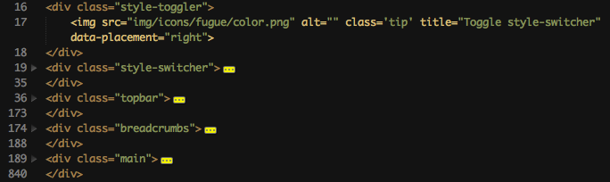
Thats the basic template grid. Every file has those items. style-toggler and style-switcher are of course not in your template. Thats only for demonstration!
Content box
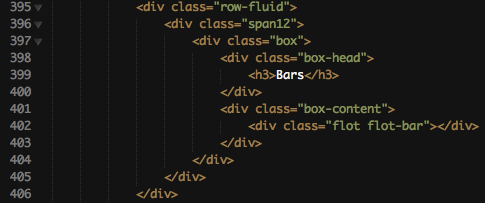
This is the code you need to use for a content box. The box-head contains the box's name inside h3.
The box-content has the actual content of that box. It has a padding by default but you can disable it with the classname box-nomargin.
Topbar
The topbar contains 3 elements. The company/template name, a searchbar and some buttons.
Name
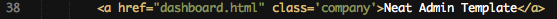
To change the name simply change Neat Admin Template to your desired name.
Search
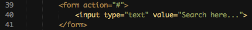
To give the searchbar the correct action-file change the action="#" to the file that handles your search. You can also add the method="post/get" type.
Items
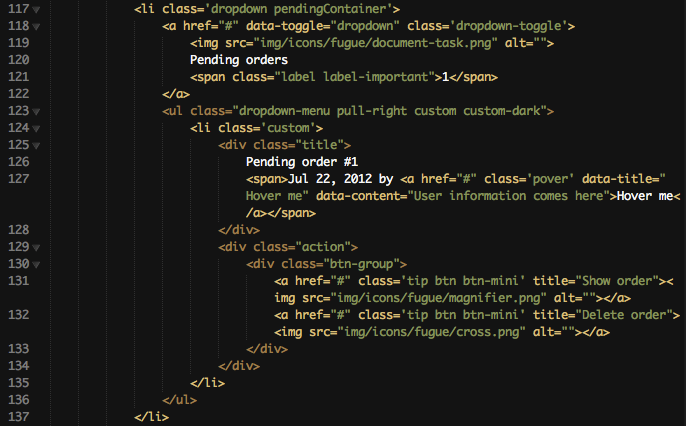
Thats one button of the top. It's showing the Pending orders button. I choosed this one because it also has a dropdown that i can explain.
I'll start with the basic button-name. It is here on line 120. Simply change it to your needs. Line 119 contains the fugue-icon. Head over to http://p.yusukekamiyamane.com/icons/preview/fugue.png to see all of them and set the name correctly. Line 121 chose the little box on the top right corner of the button. They are from bootstrap. See more information on them here : http://twitter.github.com/bootstrap/components.html#labels. After the link comes the dropdown. To use it the link needs the attribute data-toggle="dropdown" which you can see on line 118. It also needs the class dropdown-toggle. The actual dropdown needs the class dropdown-menu and if you whish the custom style it has on the topbar you need to add the class custom custom-dark. The class custom-dark is used to create a dark-shadow. All list-items need the class custom to have the original template style. On line 126 is the items description. One line below is the date and the user. The user has a popover which is activated through the class pover. If you use that class you need to set the two attributes data-title and data-content which are used for the popover. The container action contains the possible actions for that row. They have a tooltip which is activated through tip and this tooltip contains the attributes content of title. Inside that action link is again a fugue icon.
{kind=link}
Breadcrumbs
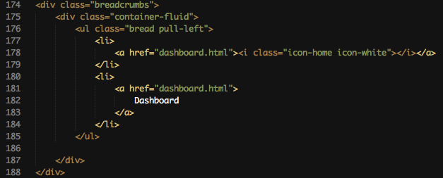Breadcrumbs are a great way to show the user where he currently is on the backend. On some deep navigations some user are confused and therefore are breadcrumbs.
Simply add more list-items which contain the link to the page. The first item doesn't contain a description because it displays the little white house icon.
Navigation
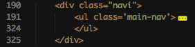Thats the basic structure of the navigation.
Items
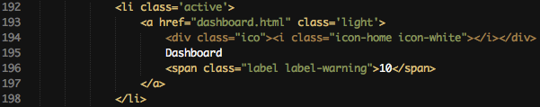
Items are easily added to the navigation. Simply add one li (list-item) and use a link inside. The link has a div (line 194) with the class ico which contains the bootstrap icon. On line 195 is the item's name and one line below is the bootstrap-label to show that this section has something new! If you don't need that label - delete it. Class active indicates that you are on this page (highlighted dark on the navigation).
Dropdown
If you want to let the dropdown expand on mouse-hover you have to add the class on-hover to the link-element. Then it should have the classes toggle-collapsed on-hover.
The dropdown structure is pretty similar to the ones of the topbar. The link needs the class toggle-collapsed and has on line 210 instead of the label, you should've read about before, a little arrow showing down.
On line 212 begins the actual collapsed navigation. It needs the class collapsed-nav to work properly. If it needs to be closed by default use the class closed. Inside this collapsed navigation are some list-items with links.
Forms
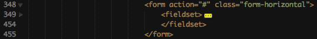
The basic structure of forms is just some normal html. There are different types of forms (horizontal, vertical etc..). Use the classes provided by bootstrap to set the style : http://twitter.github.com/bootstrap/base-css.html#forms. The fieldset is optional.
Main
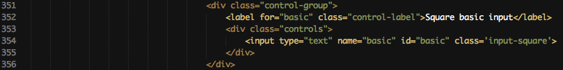
Just a basic input element surrounded by some containers. Those containers are used to show the user if there is is an error (more on that later). The label is on the horizontal form on the left side. The container with the class controls contains everything on the right side.
Here are some checkboxes. Every checkbox is surrounded by an label. This is used to provide the funtionality that if the user clicks on the description of that checkbox, the checkbox will be checked. Otherwise it will only be checked if the user clicks directly on the checkbox. I recommend using the shown method!
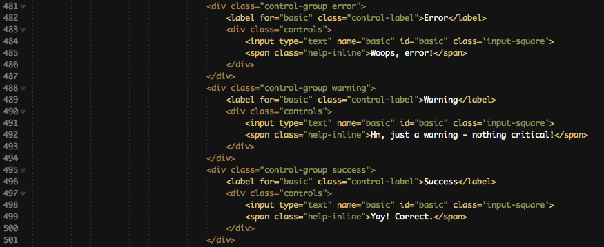
Here you can see the 3 states a form can has. Error, Warning and Success. They are shown at the bootstrap page you should've visited before. Just use the class of the state and Text and borders will have different colors (yellow,red or green) depending on the state. The span with the class help-inline is the message you provide the user to show them what is wrong.

Thats a big one... But quite simple. It only shows every size an input element can have. First, it can have the size of the grid (spanX). There are also 3 different, static sizes: input-small, input-xlarge and input-medium. You can read more in this at bootstrap.
Prepend & Append

This screenshot shows an input element with appended and prepended icons. Just surround the input tag with a container with the class input-prepend (only prepend), input-append (only append) or input-prepend input-append for appended and prepended icons. It can contain icons or simply text to prepend/append. On line 379 it contains a bootstrap icon and on line 387 it contains a dollar sign as prepend and .00 as append. That's a nice and user-friendly way to show them what is expected to be inserted.
Textarea counter
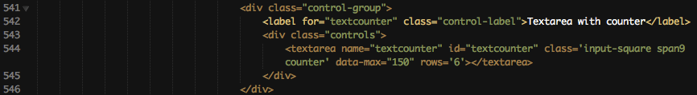
The textarea counter is a nice way to prevent the content to get too big and long. Add the class counter and the attribute data-max (maximum content length) to use this feature.
Uniform
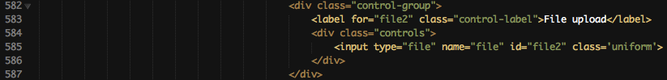
Uniform is a nice jQuery plugin which transforms the style of form elements. It also has different themes which can be viewed here : http://uniformjs.com/#themes. That site also contains all needed information about uniform. To use uniform in the Neat Admin Template simply add the class uniform.
Extended elements
Now comes the part which explains how to provide the user great plugins and form elements.
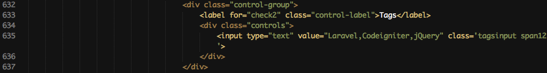
Tags need the class tagsinput. On the screenshot it also has the tag span12 which only sets the width of that input element. The value attribute is used for the default or already saved values. Just divide every tag with a , and they will be formatted as single items.
You have selects with very many elements, such as countries, or languages? No problem for chosen. Add the class cho to your select element and it will get a live search engine and will be styled greatly. http://harvesthq.github.com/chosen/
Maybe a user can select more than one country or one language. Than you need to use the attribute multiple. The Chosen select will transform into an multi-selectable element with good styling. I would recommend this for every multi-select, even without many elements. The default multi-select is not really user-friendly. http://harvesthq.github.com/chosen/
The spinner elements needs to be wrapped in a container with an form size class. spanX or input-mini etc... That needs to be done to give the spinner the correct size.
The datepicker is styled for bootstrap to perfeclty fit to the design. You only need the class datepick and it will be available after the input gets focused. http://www.eyecon.ro/bootstrap-datepicker
The timepicker is also styled for bootstrap and has a great style. Use the class timepicker to transform the input. You can choose between the default dropdown and a modal. This needs to be set in javascript. http://www.github.com/jdewit/bootstrap-timepicker
This is the screenshot of the input-masks. I think input-masks provide a great and user-friendly input element and they also pre-validate every input. Very helpful for phone numbers, serial numbers etc.. You can EASILY add your own masked inputs. It is also done via javascript (no real javascript knowledge needed). https://github.com/RobinHerbots/jquery.inputmask
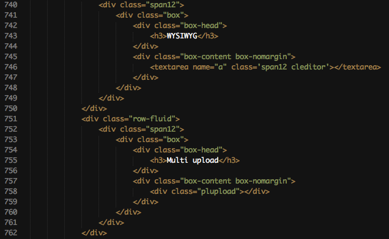
Here you can see the WYSIWYG editor and the Multiple file upload element. To use this editor add the class cleditor to your textarea. You want to know more about Cleditor ? http://premiumsoftware.net/cleditor/.
The multi file upload is set up with just one div-container (line 758). Use the class plupload and it will automatically transform. Very useful for many files and also for large files! You can specify if you want to use flash/html5/etc.. for the upload! This can be very handy. More info here: http://www.plupload.com/.
Wizard
Wizards are the best way to provide the user a neatly ordered form. Nearly every e-commerce uses wizards (eg. Checkout). If you have forms which would fit well into a wizard, use it! It is easy to setup and just awesome.
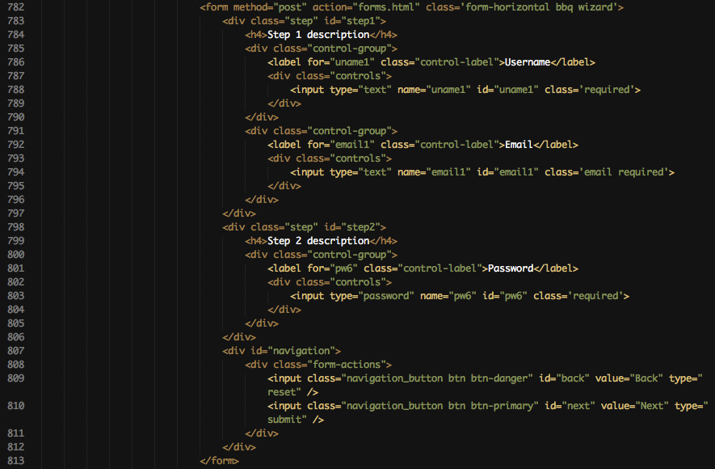
Use the class wizard on your form element. Inside it you need seperate container with the class step. Every container should have his own id. Inside that will be the form elements. At the end comes the next/back control elements via input elements (reset/submit). They are NOT put into the step containers! You can easily add validation to those seperate form elements. Just use the classes needed for validation (more info below). More information for that wizard can be found here: http://thecodemine.org/.
Validation
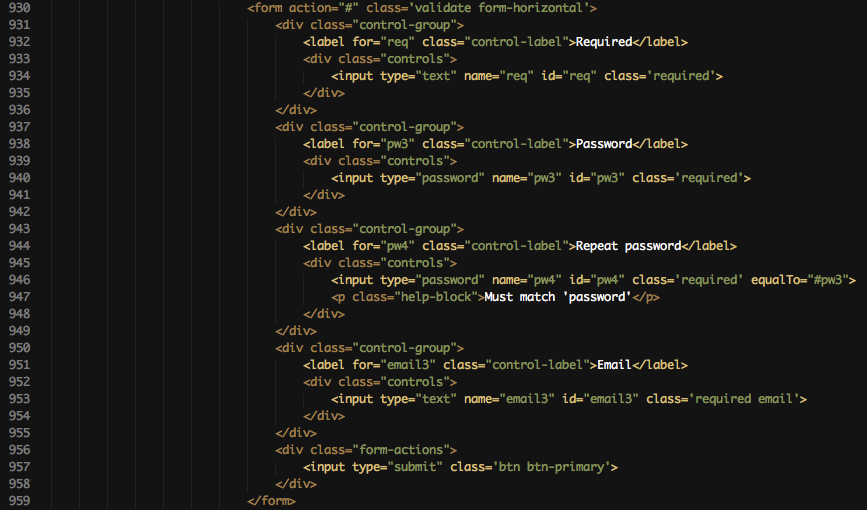I also included Metadata. You can simply add validation with metadata classes. See examples on the validation homepage or study my sourcecode.
Here is a little overview of the possible validation. It is kinda simple to implement. You only have to add some classes to the specific input elements. I won't explain everything here, because there is a better documentation here : http://docs.jquery.com/Plugins/Validation. Read it and use it!
Tables
dataTables
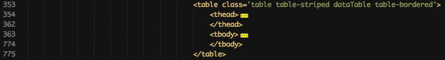
Simply add the class dataTable to transform it into a dataTable. You don't know what dataTables are? http://datatables.net/ here are all information needed. dataTables are very usefull for LARGE amount of information. Otherwise the page would load very slowly, but dataTables only display some rows to provide the needed speed.
If you want to disable the search and limit for the dataTable than you have to add the class dataTables-noheader.
Same like above - if you dont need pagination and only want to provide a simple way to sort columns, use the classes dataTable-nohead and dataTable-nofooter. It will automatically hide those features.
Plain
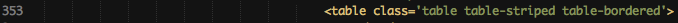
Tables need to be opened like this to look like in the template! The box-content container, about which you already read before should have the class box-nomargin so that the table fit perfectly.
If you need some more tiny tables use the class table-condensed. It will lower the padding inside the table.
To use checkoxes add this to the thead section. You also need to have that class on the checkbox. Otherwise jQuery and the check_all function won't work.
Use this in the tbody on every row to use the checkboxes!
Media
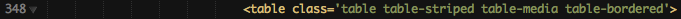
In media tables, pictures get a round border and a bit of padding. You can see that on the template. Use the class table-media to get this feature.
You want to have a preview like on the gallery page? Just add the class preview on the link tag. On hover the image inside href will be in the preview!
Interface elements
Buttons
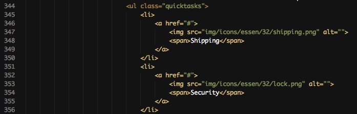Quicktasks are often in demand for backends. They provide the probably best way to customize every page and to get often used tasks to the specific page. They fit very well in a dashboard for common tasks for example. But also on other pages they are nice to have (look at sample pages).
To use them you need to create an ul with the class quicktasks. Inside that element are all list-items and they contain the actual link.
Those links have an icon from the PC.de Essen iconset. You find that on the Buttons&Icons page with a preview. Change the img src to the image you need and change the text inside the span to set the right description for that item.
The default bootstrap buttons. I won't say much about it. They have a great documentation here: http://twitter.github.com/bootstrap/base-css.html#buttons.

This are the default bootstrap sizes for buttons.
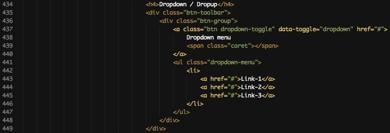Just a sample markup for a button-dropdown.
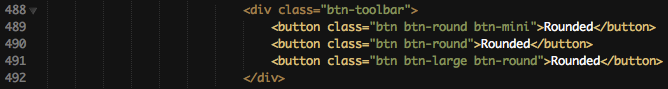
I use more square buttons on that template. If you want to use the default round bootstrap buttons, you can! Add the class btn-round to set the button to the default border-radius.
Here you can see the default markup for a custom styled dropdown. This dropdown is like the dropdown on the head or at the box-head actions dropdown on dashboard or on plain table page. It has default bootstrap markup but uses the class custom on the dropdown-menu.
I implemented a total of 32 custom colors for buttons !!! Here is the basic structure of them. It's nearly the same like the default bootstrap buttons. Just add the class of my custom color to it btn-grayX / btn-blueX ..... X stand for 1-8.
Sliders
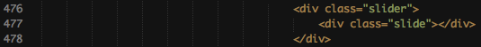
The default slider only needs 2 containers. slider and slide. Below you find some more screenshots for sliders and their customization.
If you need to see the current value of the slider use the container amount and it will be automatically filled with the current value.
To specify the min and max-value of the slider I implemented data attributes. Use data-min and data-max for it.

Same like above. If you need a different stepping value use data-step.
You need more than a one-way slider? Use the range slider to get it. Set the data-range attribute to true. If you want to use this rangeslider you also need the 2 other data attributes: data-rangestart and data-rangestop. It's just the default starting value of those 2 points.
Just another example of a ranged slider with min and max value setted up.
ProgressBars
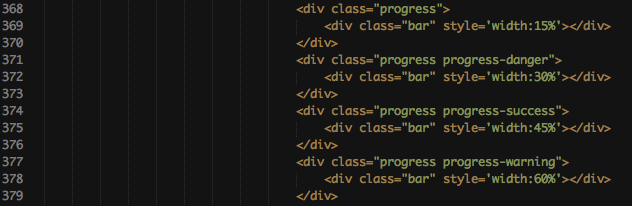All four available default bootstrap styles are shown here. More on those progress-bars can be read here : http://twitter.github.com/bootstrap/components.html#progress
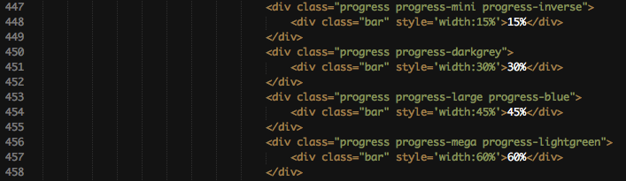
I implemented 3 new progress-bar sizes. progress-large, progress-mega and progress-mini can be used if you want something different and maybe just another size.
Same with the buttons - I use the more square version as default for progress-bars. If you want to use the default bootstrap round style use progress-round.
If your progress bar should have the moving stripes which you can see on the progress-bar page or on the bootstrap page use the class active. The class progress-preview is only needed for demonstration.
To set stripes as background use the class progress-striped.
I implemented 4 custom colors for bootstrap progress-bars. progress-inverse, progress-lightgreen, progress-darkgrey and progress-blue are the classes you need to know for it.
Tooltips
Every element on the page can have a tooltip! Simply add the class tip and set the attribute title.
To set the placement of the tooltip to a specific side use the data-attribute data-placement.
Notifications

Here you can see the default bootstrap alerts. Read more about it here : http://twitter.github.com/bootstrap/components.html#alerts.
If you want a growl-like notification add the class opengrowl and use the data-attribute data-content to set the content. You can also set a header for that growl-like notification. To do so add the class hasheader and use the data-attribute data-header.
Sample markup of a modal window. More in this can be read here : http://twitter.github.com/bootstrap/javascript.html#modals.
Sample markup of a popover. Read here more : http://twitter.github.com/bootstrap/javascript.html#popovers.
Popovers can also be triggered manually with a click. Just use the data-attribute data-trigger="manual".
Tabs & Pills
To create tabs in the box-head you first have to add the class tabs to the container with the class box-head. After the h3 element in the box-head comes the navigation which contains the tabs. More on this can be read here, it has the SAME markup : http://twitter.github.com/bootstrap/components.html#navs. The box-content now needs another container which has the class tab-content. That container has for every tab a seperate container. This container needs to have the id which the link in the navigation refers to.
Same like above, but now with pills.
Here is a sample markup of greatly styled buttons in the box-head. You need the container with the class actions after the h3 element in the box-head. Inside the div.actions container is the navigation. Inside the navigation are the little buttons. On line 400-402 you see a simple button without dropdown. The icon has a tooltip and a fugue icon. On line 406-419 is a button with the custom styled dropdown of bootstrap. The markup is the same like in the topbar but it doesn't have the custom-dark class because the box-shadow is lighter here.
Statistics
Quick stats
The quick stats are done with Peity. It's a jQuery plugin which provides easy to implement, small statistics. First you have to create a navigation with the class quickstats. Inside that navigation is for every statistic a seperate item-list. That item-list contains two div containers. The first one contains the chart and the second one the two other text-information. To customize the chart you have to set the content of the div to ur values. data-color and data-stroke are used for the color of that statistic. Simply insert your custom hex-code in it. data-type is used to determine which type of statistic you want to get generated. Possible types are line, pie and bar.
Flot
The basic markup for a big statistic is shown here. Use flot-line, flot-bar, flot-pie or flot-live to get the desired statistic. They need to be handled in jQuery. You can read more on flot-statistics and how to customize them here : http://code.google.com/p/flot/.
B) CSS Files and Structure - top
Many CSS files are included. Most of them are for jQuery plugins and should only be changed if you know what you are doing.
These files are from the template:
- style.css
- blue.css
- red.css
- green.css
style.css is for the default gray color. Well.. the other files are pretty self explanatory.
C) Javascript - top
This theme has 2 javascript files.
- custom.js
- error.js
The first one contains everything the page needs, the second one contains everything the error-pages and login-page needs. You should NOT change the second one.
You can change some things of the first one, for example plugin-code. It is split into 3 sections. FOR DEMONSTRATION ONLY, DO NOT CHANGE and PLUGINS. The FOR DEMONSTRATION ONLY part can be deleted of course! Everything inside PLUGINS can be changed but know what you are doing, otherwise you will delete some features!
D) Sources and Credits - top
HTML Framework
Used jQuery plugins
- Jquery
- Jquery UI
- Flot
- DataTables
- UI Spinner
- TagsInput
- jGrowl
- InputMask
- FancyBox
- ClEditor
- Chosen
- Bootstrap
- Bootstrap timepicker
- Bootstrap datepicker
- PLUpload
- Validation
- Wizard
- Textarea counter
- Peity
- Color animation
- Uniform
- Form
- Fittext
Used Icons
Once again, thank you so much for purchasing this theme. As I said at the beginning, I'd be glad to help you if you have any questions relating to this theme. No guarantees, but I'll do my best to assist. If you have a more general question relating to the themes on ThemeForest, you might consider visiting the forums and asking your question in the "Item Discussion" section.
Ernst-Andreas Krokowski